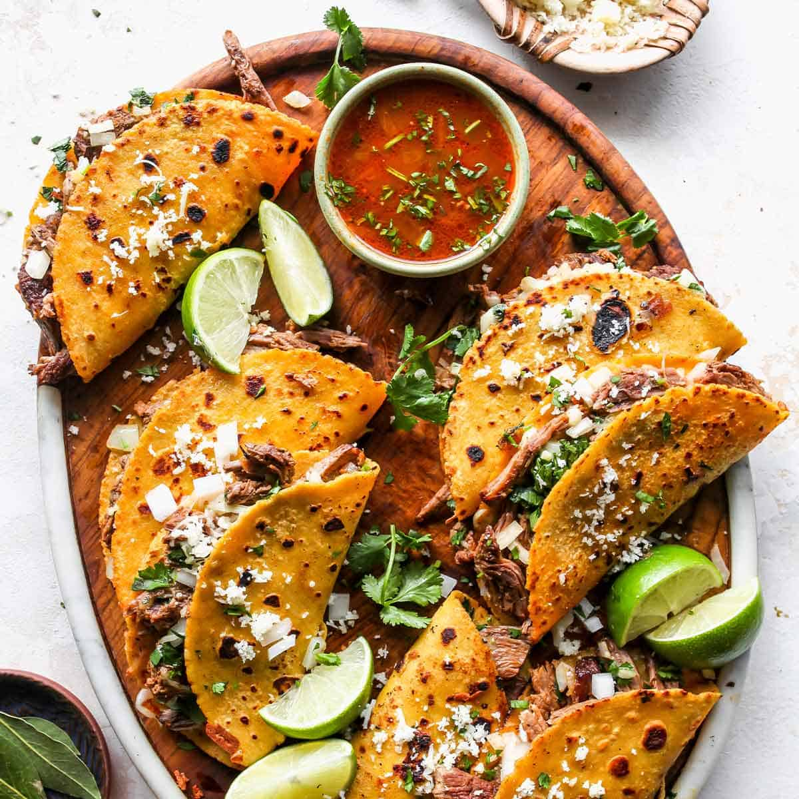

Birria Tacos

Description
Have you ever eaten a taco and thought "This could be better!"?
Yeah neither have I. However, social media has brought forth communication
unbound and tacos unexperienced. From dance trends to slime videos, social
media has now brought Birria tacos to the forefront, in all their crunchy
cheesy juicy glory.
Ingredients
- Dried chiles(Guajillo,ancho, and chiles de arbol
- 1/4c Mexican oregano
- 1 Mexican cinnamon stick
- 1lb Short ribs
- 2lb Beef chuck
- 3 Dried bay leaves
- Salt and Pepper
- 3 Whole onions
- 4 Whole tomatoes
- Lime
- Cilantro
Steps for Birria
- Bring meat to room temperature and then salt it liberally.
- In a large pot that has an oven-proof lid, place it over medium-high heat. You will have to do this in batches, but sear the meat on both sides for about 3 minutes per side. Transfer the meat to a bowl and then repeat with the remaining pieces of meat.
- Then you add the chiles, tomatoes, onions, spices and garlic to a pot. Cover the chiles and everything with water and simmer for about 20 minutes. We want the tomatoes and chiles very softened.
- Drain it and then transfer everything to a blender, along with a cup or two of beef broth or water. Blend it up until super smooth.
- Add the meat back to the large pot and pour the sauce over it. Pour 1 cup of broth in the blender and swish it back in forth (to pick up any extra sauce) and pour it into the pot. Bring it to a gentle simmer and then cover. Transfer the pot to the oven to braise for about 3 to 3 1/2 hours, until the meat shreds easily.
Steps for Birria Tacos
- Remove the meat from the sauce and shred it with two forks.
- Add some of the sauce (the consomé) to a bowl and add a little beef broth if it needs to be thinned out.
- Mince up some onion and cilantro and mix it in a small bowl with a few squeezes of lime and a pinch of salt.
- Add a spoonful of the cilantro and onion mixture to the consomé and add a squeeze of lime.
- Dip a corn tortilla into the top of the sauce. This should be mostly fat. And add it to a non-stick skillet, set over medium-high heat.
- Flip over and then add a small handful of shredded meat and a handful of Oaxacan cheese. Shape it into a quesadilla/taco. And flip it over so it can get crispy and melty on the other side.
- Transfer to a baking sheet and place in a 200F oven while you work your way through the rest of the Birria tacos.